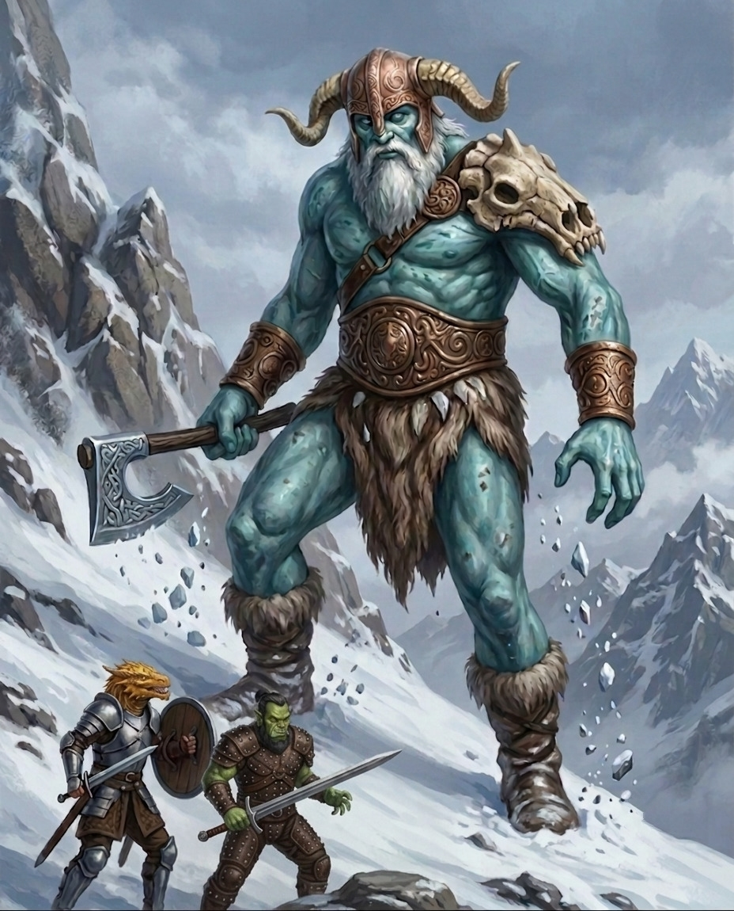

In which our thoroughly capable, if strategically indecisive, adventurers set forth from the subterranean comforts of Uthodurn, having first successfully navigated the earth-shattering logistical crisis of whether to ride goats or horses into the frozen north. Having elected for equines and departed alongside a cohort of fiercely professional drow, the party’s bracing mountain stroll is rudely interrupted by a screeching wyvern, an aerial faux pas swiftly managed by prudent cowering until the beast loses interest. Their subsequent progress is then thwarted by a genuinely catastrophic impediment: a herd of profoundly apathetic white bison who flatly refuse to be rushed, forcing the mighty heroes to endure the sheer indignity of waiting for dawdling livestock to clear the road. Retiring for the evening and politely ignoring the world-ending silhouette of an ancient white dragon the following dawn, the company’s stoic march is abruptly shattered by a pair of frost giants demonstrating a shocking lack of decorum by hurling dwarf-sized boulders. What naturally follows is a scene of highly polite chaos, wherein Scarlet adopts the socially distressing guise of a giant wolf spider, Elara experiences the near-lethal inconvenience of being violently swatted from the sky, and the pragmatic Hilda sets about pruning the behemoths at the knees with the brisk, methodical efficiency of a gardener, culminating in a triumphant barrage of magic that firmly concludes the day’s untoward unpleasantness.
Morning came gently to Uthodurn, and the party descended to the common room of the Broken Stool for one last breakfast before the road. Luda, the tavern’s steadfast dwarven keeper, served them porridge with fresh fruit—an expensive indulgence at one gold piece, but fruit underground was a genuine luxury worthy of the expense.
Elara had dressed for the occasion in what she called her “adventure sexy” outfit, a modified version of her studded leather armour that suggested she intended to face the north with style if not necessarily with thermal wisdom. She wore her Cloak of Billowing over it, because if one was going to freeze, one ought to look dramatic doing so.
As they finished their meal and settled their accounts, the tavern door swung open to admit Hilda Brackmar, fully kitted and ready for war. She wore full plate armour from neck to ankle, a battle-axe strapped across her back, a heavy crossbow at her side, a shortsword on her hip, and a squat quiver of bolts. She was barrel-chested, broad-shouldered, and possessed a jaw that looked as though it had been quarried from the same stone as the mountains. A faint shadow of a beard graced her chin, as was common among dwarven women, and she wore it with a certain unapologetic dignity.
“Mounts,” she said. “Stables. Twenty minutes.”
The party scattered. Kragor made a trip to the Plexus Post, selling off a few acquired odds and ends before asking Ava about finding an enchanter who could work with musical instruments. She produced a rare enchanted Canaith Mandolin from her inventory — four thousand gold pieces — but Kragor knew Elara preferred the harp, flute, and hand-drum. Custom enchantments were beyond Ava’s current stock; she pointed him toward Rexxentrum and the renowned Pumat Sol. Scarlet, for her part, put her new herbalism kit to use, quietly brewing a potion of healing into an empty flask. Twenty minutes later, on Hilda’s schedule, they reconvened at the stables.
The stables were a shared affair: one side for commercial travellers renting or purchasing mounts at exorbitant prices, the other for the Glassblades’ home guard. Hilda negotiated with the stablemaster while the party debated their equestrian strategy with a spirited disagreement usually reserved for matters of life, death, or dinner orders.
The route would take them through mountain terrain before crossing a river onto the Rime Plains—mile after mile of rolling, frozen hills populated by little more than hardy scrub and whatever monsters happened to be passing through. The question was mounts: sure-footed goats for the mountains, or faster horses for the plains.
Therin, whose tail was already dreading an uncomfortable saddle situation, once more advocated for his hybrid goat-and-horse plan. The party, after some back-and-forth that left Hilda looking mildly baffled, ultimately abandoned the goats and settled on horses alone. Ten of them, including two of dwarf-size for Hilda and whoever else had short legs. They would pay for the choice in climbing time but make it up on the open plains.
The Glassblades set about preparing the expedition with the blunt professionalism that made it clear they did not appreciate needing the help.
The Taskhand arrived with his two guards, who were now clad in full armour for the journey. Black leather worked to resemble insect carapace, studded with onyx or obsidian, their helmets sloping forward and coming to a sharp point at the back. Elara gave them a thorough once-over and concluded that they were capable professionals. Serath himself wore his usual fine robes beneath a beautiful travelling cloak, and carried a staff topped with a gleaming dodecahedron.
Everyone was present except Brennik. Kragor asked after him, but no one could say where he had got to. They waited.
While they waited, the Taskhand expressed his gratitude for the party’s company: the drow were not accustomed to surface travel and would prefer to avoid direct sunlight wherever possible. Scarlet, curious about the practicalities of drow life, asked whether the people of Xhorhas slept during the day. The Taskhand explained that in Rosohna, the sky was magically darkened so that the drow could keep a schedule compatible with their surface-dwelling neighbours. “You darken the sky?” Scarlet asked, plainly astonished.
Brennik arrived at last, running breathless and apologetic. He had had yet another fight with his father. “I just want to get back to work,” he said, with the conviction of a young man who had heard quite enough about how worried everyone was for his safety. Kragor took him aside and offered reassurance: the boy was right to get back into the thick of things, and his father’s anxieties were not worth carrying. Then, with the casualness of someone changing the subject, Kragor cast a meaningful look toward Hilda. He allowed, in a tone of considered appraisal, that here was a fine dwarven woman—broad of shoulder, strong of arm—even if he himself found the beard a touch off-putting. What did Brennik think? The question hung in the air with a transparency that made further subtlety redundant. Brennik, reading the intent with the precision of someone who had fielded this sort of inquiry before, replied that Hilda was old enough to be his mother.
As the party finished assembling, Scarlet raised a hand and flexed her connection to the wilds. There was a shimmer in the air, a brief disturbance of light, and Sparky materialised on her shoulder—an owl of pale feathers and amber eyes, blinking at the assembled company, quiet and slightly judgmental.
They set out into the mountains, Sparky on patrol ahead. The terrain was punishing: steep slopes of loose scree, narrow ravines between shoulders of rock, the ground scarred by old landslides. Whenever the sun broke through the clouds, the drow moved instinctively toward whatever shadow they could find—not in apparent pain, but with the reflexive discomfort of nocturnal creatures caught in an unwelcome spotlight.
They had been climbing for the better part of a morning when Sparky came tearing back. A shape rose behind the owl: broad leathery wings, a long tail, unmistakably dragon-like. Scarlet reacted without hesitation, and the owl vanished mid-flight. Its pursuer—a wyvern, she identified it—shrieked in frustration, threw out its wings to brake, and hovered, scanning the terrain below. The party took cover. After a long, held-breath moment, the wyvern caught an updraft and soared back toward the peaks, apparently deciding the hunt was not worth the effort.
As the afternoon wore on and the light began to fade between the mountain shoulders, the party descended into a broader valley and found their path blocked by a herd of white bison, their pale hides ghostly against the grey rock, moving at a steady, unhurried pace. One of the calves had a slight limp.
Scarlet dismounted and began the ritual to cast Speak with Animals, settling into a concentrated pose of non-threatening stillness—legs crossed, eyes closed, breathing slow. The few bison who noticed her regarded her with the mild, unimpressed curiosity of creatures who had never once needed to negotiate with a stranger to get where they were going. They continued walking. By the time she was ready to speak, the valley was empty. Scarlet opened her eyes, surveyed the unobstructed path ahead, and climbed back onto her horse without a word.
By twilight, the party was climbing again, navigating by the violet-tinged Dancing Lights conjured by the Taskhand, a lantern, torches, and whatever cantrips the spellcasters could spare. Hilda noted wryly that light made them easier to see, but at least they could keep moving.
Vornesh—the silent drow soldier who had yet to speak a word since they left Uthodurn—rode ahead of the column and vanished into the dusk. The Taskhand relayed that she was searching for shelter. When they found her again, it was at a shallow hollow in the rock face: not so much a cave as a scoop taken out of the mountain, but enough to break the wind and hide the firelight from anything that might be watching.
A fire was built. Kragor took watch with Aedric, the Echo Knight standing in silent stillness against the cave wall while Vornesh wandered off into the darkness somewhere beyond the firelight. The night passed without incident: small, nameless rustlings in the dark, some slithering sounds that might have been Therin’s tail in his sleep, and nothing more.
They broke camp before dawn and pushed on beneath a lid of cloud—a muted, colourless sky the drow preferred and the rest of the party was happy to tolerate for their sake. The morning had not yet aged into something recognisable when movement drew every eye upward: an immense shape, pale as frost, gliding along the ridgeline at an altitude that made the mountains look small. It was large enough that distance was the only mercy.
Kragor tapped Hilda on the shoulder. “Is that Gelidon?”
Hilda’s reaction was immediate and emphatic. “Where?!”
But the ancient white dragon—the Nightmare in Ivory, as the locals called it—was not hunting in their valley. It passed overhead without pause and continued on its way. Therin watched it go with a complicated expression. Dragonborn had been enslaved by dragons once, and the sight of a great white wyrm did not stir fond memories, even if it was headed elsewhere.
The afternoon brought trouble.
Sparky returned ahead of schedule, making straight for the party. A boulder the size of a dwarf came sailing from behind them on the left and smashed into the ground near Brennik. Simultaneously, a cascade of snow and rock poured down the slope on the right. Sparky’s telepathic report was frantic but succinct: “very BIG things ahead!”
The party did not need the owl’s confirmation to know that something had found them. A boulder does not throw itself, and mountainsides do not conveniently collapse at the exact moment one passes beneath them. No foe was visible yet among the rocks, but the signs were unambiguous. Weapons were drawn, words of power readied, and the column dispersed into whatever cover the terrain offered—each adventurer moving with the practised economy of people who had survived long enough to trust their instincts.
Therin dismounted and spoke words that hummed with power, settling a shimmer of fortune over the frontline. Doctor Pepe leapt from his horse and took cover behind the fallen boulder, crossbow ready. Elara took to the air on celestial wings, shortbow in hand. Kragor rode behind an outcropping and gathered crackling violet energy around his hands.
The ground shook. Not the way a boulder shakes the ground when it lands, or the way a rockfall makes the earth tremble. This was a steady, rhythmic impact, each pulse heavier than the last, each one closer. And then the slope above them seemed to move — a shape that had been mistaken for a shoulder of rock detached itself from the mountainside and rose, and rose, until it blotted out the sky. A frost giant stood fully fifteen feet above the tallest of them, its pale blue eyes unhurried and appraising. It had never once been threatened by anything it could not crush.

Kragor unleashed a bolt of crackling violet force that struck the giant square in the shoulder with an impact that made the creature stagger. Retribution from the giant came swiftly. It pulled out a bow the size of a young pine stripped of its branches and fired an arrow at Kragor. The javelin-like shaft punched clean through his defences and buried itself deep — a blow that should have dropped him. Only the surge of dark vitality he had called forth before the march — necromantic energy coiled beneath his skin — kept him upright.
A second arrow struck Hilda’s chestplate and glanced away, the dwarven forge-work holding firm. She was already swinging herself out of the saddle before the ringing stopped, hit the ground with both boots, drew her crossbow in the same motion, and sent a bolt into the giant before it could nock another.
Scarlet shimmered, warped, and collapsed inward—her form unknitting and reconstituting in a grotesque, fluid instant. Where she had stood, a giant wolf spider now crouched, bristling with chitin and eyes, its mandibles clicking. Two of the horses screamed and bolted, dragging their reins through the snow, the terror of the wild older than any training. Scarlet-spider did not pause to admire her new form; she scrambled up a rock formation with the skittering, effortless speed of something built for vertical stone. And then Sparky’s telepathic report came, sharp and grim: there was a second giant, approaching from behind. The party was caught in a pincer.
Aedric manifested an echo—a purple-tinted duplicate that flickered into existence beside him—and both he and it moved to position themselves between the Taskhand and the approaching threat. Similarly, Vornesh’s echo split from her like a reflection stepping out of a mirror. While it surged ahead, she drew a blade across a small vial, coating both scimitars in a film of oily poison, then followed.
Brennik dismounted on shaking legs, his face pale beneath the hood of his cloak. For a moment he stood frozen, crossbow half-raised, staring at the enormous shape that had descended upon them. Then he was moving—not toward cover, not away from the danger, but toward Kragor, as though the orc was the only anchor in a world that had suddenly grown enormous. He reached the rock formation, found a firing stance, aimed, and loosed. The bolt flew true and buried itself in the giant’s flank. For a fleeting second, the terror in his eyes gave way to something like wonder. He had actually hit it.
Serath raised his staff. The dodecahedron at its tip flared, casting pale light across the ravine, and he spoke a single arcane syllable. Whatever he had intended, it did not take. The giant was unmoved, unmarked, unharmed. Serath lowered the staff with a frown and began a different incantation.
Before the party could press their advantage, a crash from behind them announced new trouble. A second giant emerged from the slope above, smaller than the first but no less imposing—broad-shouldered, pale-skinned, her fur cloak caked in frost. She hauled a bow from her back and sighted on Vornesh’s echo, the purple-tinted duplicate flickering ahead of the drow soldier. The first arrow sailed wide, splintering against the rock face behind it. The second followed an instant later, close enough to shear the air beside the echo’s head, but close was not enough. The giant growled in frustration, already reaching for a third.
Doctor Pepe slipped out from behind the boulder, silent as a shadow, and put a crossbow bolt into the giant’s thigh. Elara swept in from above, shortbow drawn, but the angle was wrong and the shot went wide. She clicked her tongue in frustration, but then a sing-song word of healing—bright, melodic, defiant—lilted from her lips. Warm light washed over Kragor, and some of the pallor left his face. Before the giant could follow up, Therin spurred his horse closer, his voice rising in a draconic hymn—a prayer to the Platinum Dragon that pulled Kragor back from the brink. The wound knitted fully, colour returned to his cheeks, and he straightened, rolling his shoulder. He was back.
Kragor thrust out a hand, violet energy crackling between his fingers. A cloud of spectral daggers materialised around the giant and wheeled in a tight, vicious orbit, each pass slicing not at flesh but at something tender and nameless beneath it. The creature howled and clutched at its head, staggering sideways, its thoughts tearing like wet paper.
The giant then closed on Doctor Pepe and swung a greataxe the size of a small tree. The blow landed with devastating force—a deep, freezing wound that left the rogue badly wounded but still on his feet. The second swing would have finished him, but the axe swept past his ear. The giant roared in frustration, and somewhere behind them, its companion answered with a bellow of renewed fury.
Scarlet-spider pivoted on the rock formation and loosed a strand of webbing at the giantess. The sticky rope caught around her ankles—but only for a heartbeat. The giant tore through it with a flex of her legs, shook the dissolving strands from her boots, and kept advancing.
Aedric’s echo surged forward, the purple-tinted duplicate bringing its longsword in a wide, two-handed arc that bit deep into the giant’s side. Vornesh’s echo was a half-step behind, closing in a blur of scimitars that carved two quick lines of red across its ribs.
Hilda charged the giant, battle-axe swinging, and hacked into its shin, knocking it off its feet. The giant crashed to the ground heavily. Hilda did not pause to admire the fall. She stepped forward, adjusted her grip, and brought the battle-axe down in a clean, economical stroke that opened a grievous wound across the giant’s chest. No flourish, no triumph—just the next piece of work.
Seeing Hilda’s steady, methodical work, Brennik found his nerve again. He abandoned his position, crossed the distance to the fallen giant in a few quick strides, and drew his warhammer. The blow landed with a crack against the giant’s ribs.
Serath raised the dodecahedron pendant from around his neck, the faceted crystal catching the dim light, and intoned a prayer in the deep tongue of the Underdark. A shimmering mace of translucent radiance materialised beside the giantess, trailing motes of silver light. It swung in a tight arc toward her ribs, but the giant batted it aside with the flat of her blade, and the mace skittered off-target, its glow flickering before it steadied and circled back for another pass.
The giantess swung her greatsword in two crushing arcs. The first cut empty air; the second caught Vornesh’s echo across the chest, and the purple-tinted image shredded like smoke, winking out of existence. The giant threw back her head and let out a bellow that shook snow from the rocks—a raw, defiant war cry that seemed to reignite something in her companion. The giant stirred where he lay, rage flickering back into his eyes.
Even as the giantess’s war cry rang through the ravine, the party set upon the prone giant with a savage, coordinated urgency. Doctor Pepe limped forward, blood still seeping from his wound, and drove his shortsword deep beneath the giant’s arm, following it with a dagger that found the soft flesh under the jaw. Elara levelled her wand and spoke three sharp syllables. Streaks of force—bright, precise, unerring—punched into the giant’s chest in a tight cluster. Kragor closed his fist, and the cloud of spectral daggers churned back into position above the giant’s head, spinning in a tight vortex that tore through thought and memory alike. The giant’s hands went slack; its jaw hung open.
But the giant was not finished. With a surge of raw fury, it hauled itself upright, seized its greataxe, and swung. The blow caught Hilda across the shoulder—a hit that would have felled most warriors, but she held her ground, teeth gritted. The giant had already found a better target. It turned, planted both boots, and swung upward at Elara, hovering at the edge of the axe’s reach. She met its eyes and spoke a twisting, disorienting word—a sound meant to unspool its rage into confusion. For the barest instant, the axe faltered. Then it kept coming. The blade caught her across the body, a devastating impact that hurled her from the air. She hit the frozen earth and did not move. From behind the outcropping, Kragor’s voice tore through the ravine in a raw, anguished scream.
Serath gripped his dodecahedron pendant, and a pale light bloomed between his fingers. He spoke a single word in the harsh, sibilant tongue of the Underdark—a command, not a prayer—and Elara stirred. Her eyes opened, unfocused, and the gash across her body began to close. Serath had already turned, the same light reaching out to Hilda, knitting the torn muscle in her shoulder.
Scarlet-spider turned her attention to the giant and loosed another strand of webbing—but the giant was still swinging wildly with its greataxe, and the strand was torn apart before it could take hold. The distraction was all Hilda needed. She stepped forward and brought her battleaxe down in two tight, merciless arcs. The first blow opened the giant’s throat. The second buried itself in its chest. The giant went still. Hilda wrenched the axe free, blood steaming in the cold air, and without a backward glance, turned and charged toward the giantess.
Vornesh manifested another echo, the purple-tinted image splitting from her like a second self, and both echoes surged forward. Aedric’s echo struck first—a longsword slash that opened a line across the giantess’s forearm. Vornesh’s echo followed a heartbeat later, scimitars flashing, drawing blood from her thigh. A pair of crossbow bolts found their mark as Brennik and Doctor Pepe fired in unison, one in the shoulder, one in the ribs. But the giant did not fall. She swung her greatsword in a brutal arc that caught Aedric’s echo across the chest, and it dissolved into wisps of violet light.
Elara, recovered and angry, forced the giant to its knees with a single, imperious word of command: “Grovel”. The enormous warrior prostrated itself, belly to ground.
The party did not wait for the giant to recover. Therin pointed a single claw, and a dolorous bell tolled in the air; the giant’s body shrivelled almost imperceptibly, a wash of necrotic pallor passing over its skin. Scarlet-spider coated its boot in a thick layer of webbing, but the bind was partial—the giant could still shift its weight. Aedric manifested his echo once more, and the duplicate landed two blows in a breath, longsword carving a pair of parallel wounds across the giant’s ribs. Hilda crossed the remaining ground at a full charge and buried her battleaxe in the giant’s thigh, the blade biting deep. Vornesh was already there, her scimitars opening new lines of red across the giant’s flank. Crossbow bolts thudded into the giant’s back as Brennik and Doctor Pepe fired from range. And above it all, Serath’s spectral mace came down in a crushing blow, while Serath himself raised his holy symbol and spoke a word that washed the giant in searing radiance—holy fire that left smoking lines across its skin.
Elara touched the wound across her ribs, still fresh, still burning with the memory of the axe. Across the snow-covered field, the giantess lay prostrate, enormous arms splayed, its war cry reduced to laboured breath. Elara raised her wand.
Three streaks of arcane light crossed the distance in a heartbeat and struck the back of the giant’s head in a tight cluster. The sound was soft, almost polite—three dull thuds in quick succession. The giant’s breath stopped.
Silence returned to the ravine. The wind picked up, carrying the first flakes of snow over the corpses of two very large, dead problems.
Doctor Pepe, leaning against the boulder that had saved his life, let out a long breath. “I do not,” he said quietly, “like giants.”